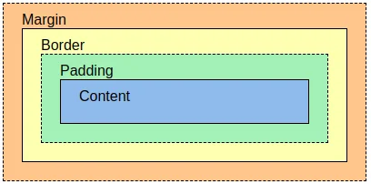

El Box Model (Modelo de Caja) es la forma en que CSS ve y calcula el tamaño de todos los elementos en una página web.
Cada elemento se considera como una caja compuesta por 4 partes:
content):: El área donde está el texto, imagen, etc.padding):: Espacio entre el contenido y el borde.border):: El borde que rodea al padding y al contenido.margin):: Espacio exterior que separa un elemento de otros.
Tamaño total = width + padding izquierdo + padding derecho + border izquierdo + border derecho
Lo mismo para el alto